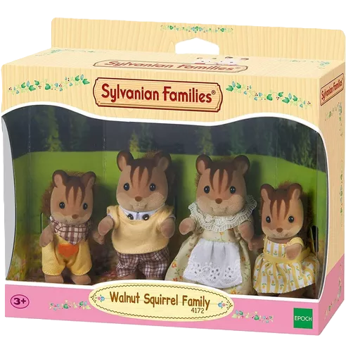
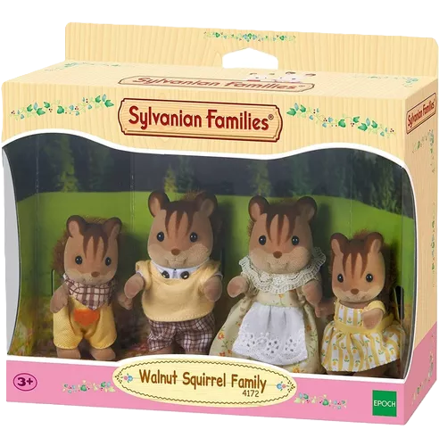
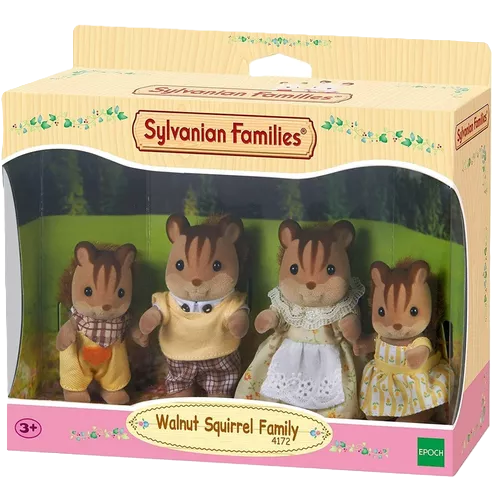
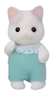

¡Nuestra tienda tiene desde los ternurines más buscados hasta los más ex√≥ticos! Pregunta por los que quieres si no están en la lista. ü•∞
¡Aquí las familias más bonitas que tenemos disponibles para envío inmediato!

Los precios para compra individual son los siguientes:
| Tamaño | Ejemplo | Precio | Comprar |
|---|---|---|---|
| Adulto | $ 200.00 MX | ||
| Niño |  |
$ 300.00 MX | |
| Bebé |  | $ 350.00 MX |
Para comprar una familia completa selecciona cualquier tamaño y en "Integrante" elige la opción "Todos".
Es importante no mojar el pelaje de los ternurines, pues puede desprenderse. Si quieres limpiarlos, recomendamos utilizar un palillo con mucha paciencia, o bien, una cinta adhesiva que tenga muy poco pegamento (por ejemplo, los washi tapes).
Y si te interesa, sigue el canal oficial de Sylvanian Families en espa√±ol üì∫‚ú®